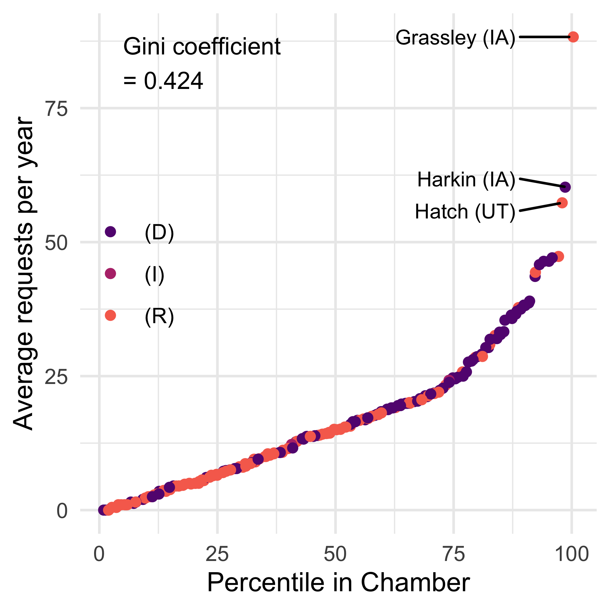
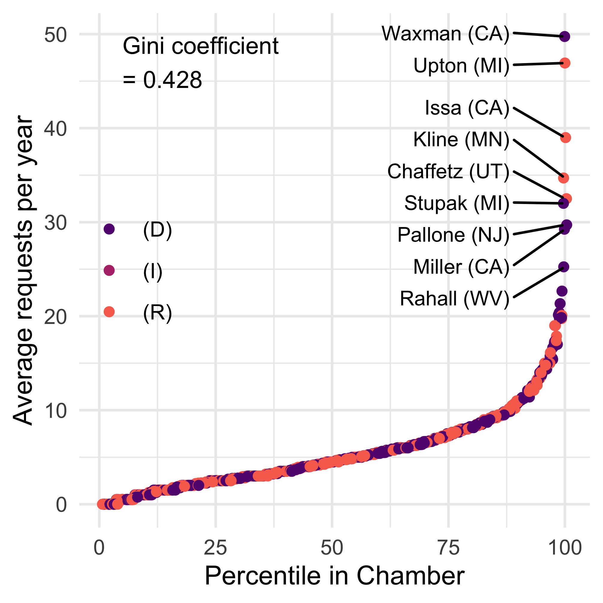
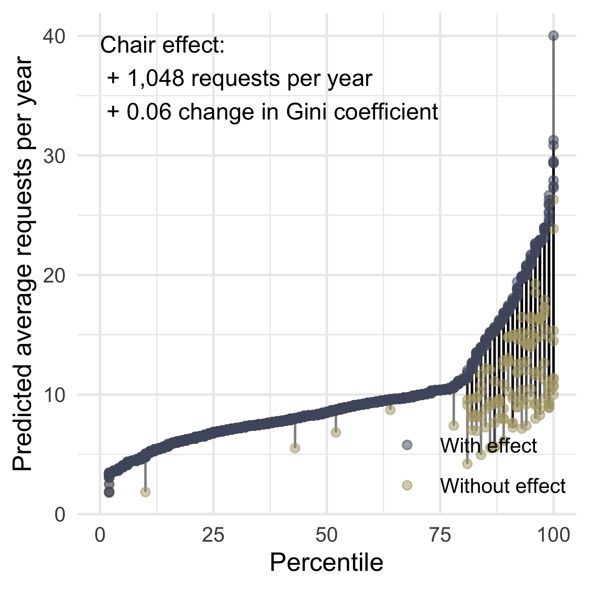
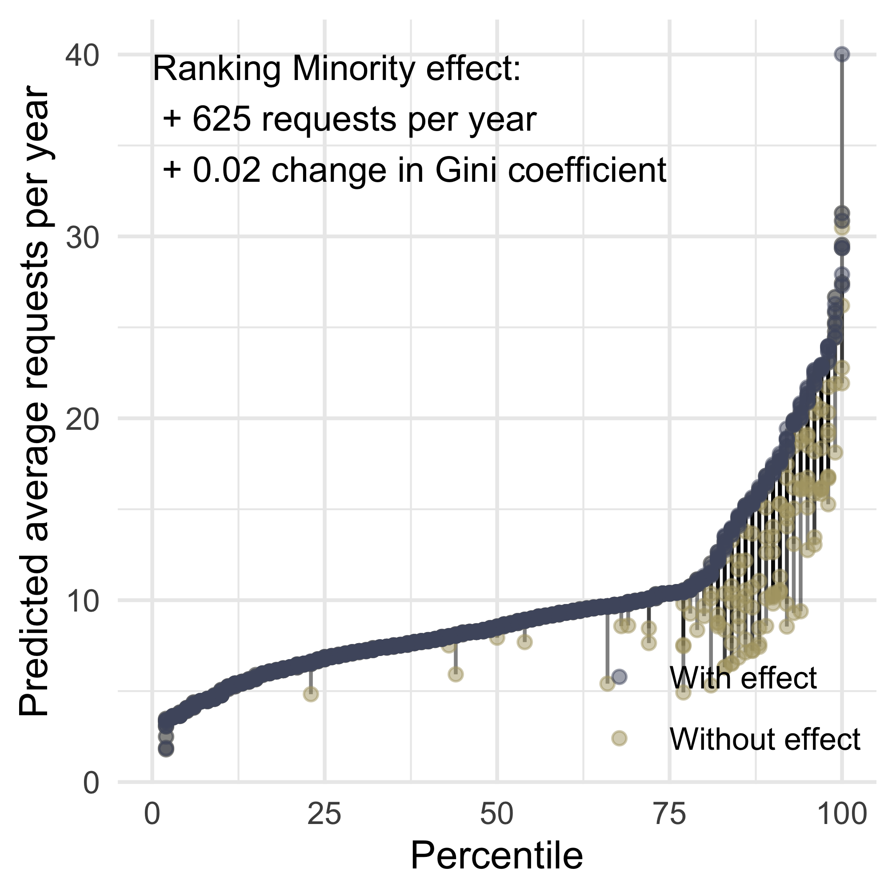
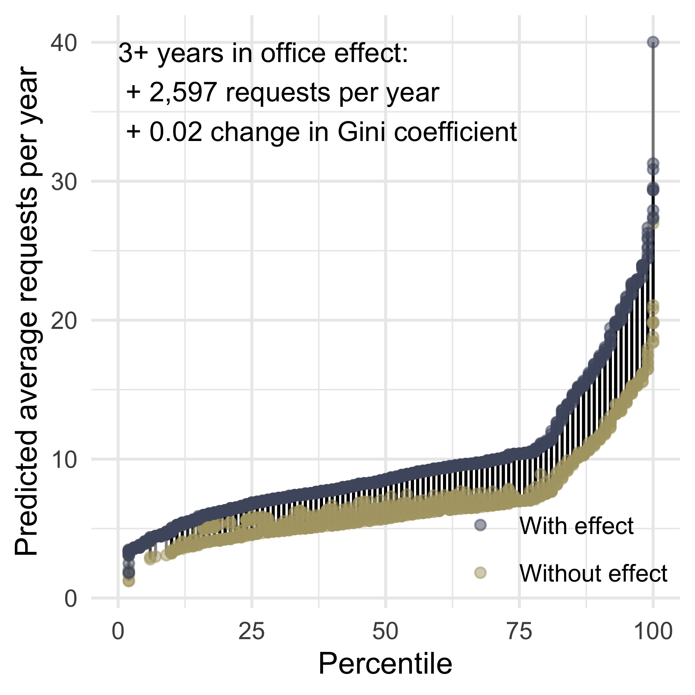
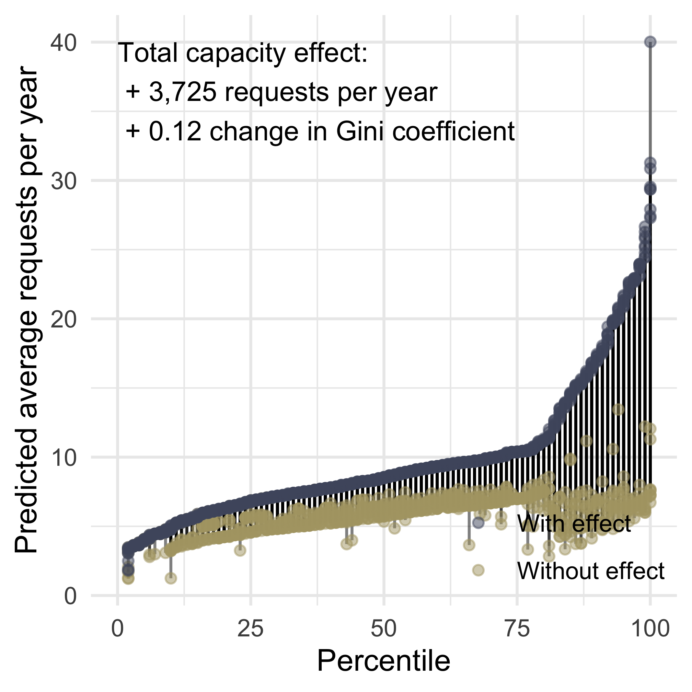
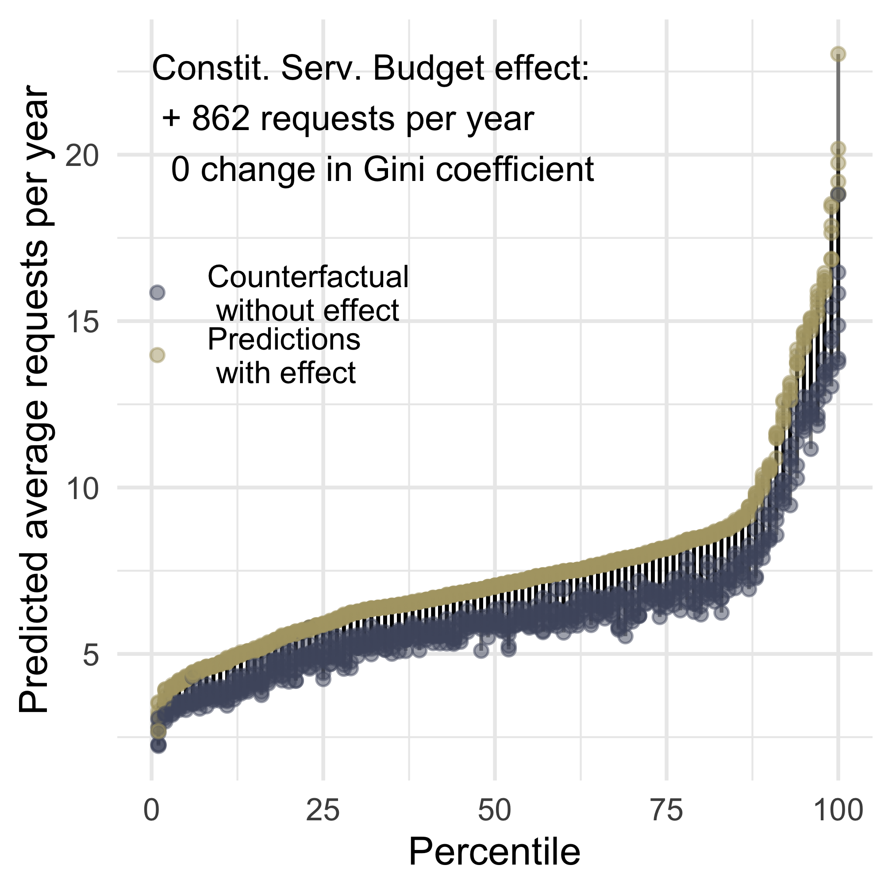
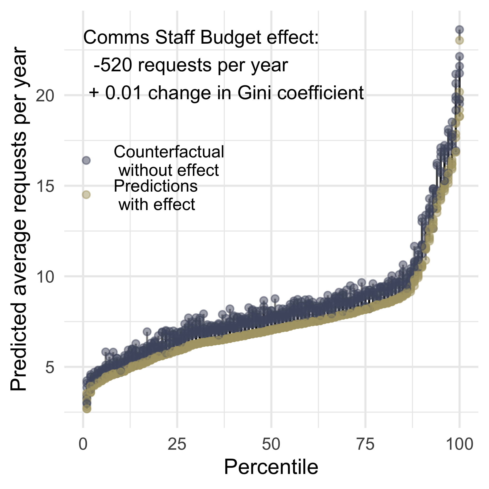
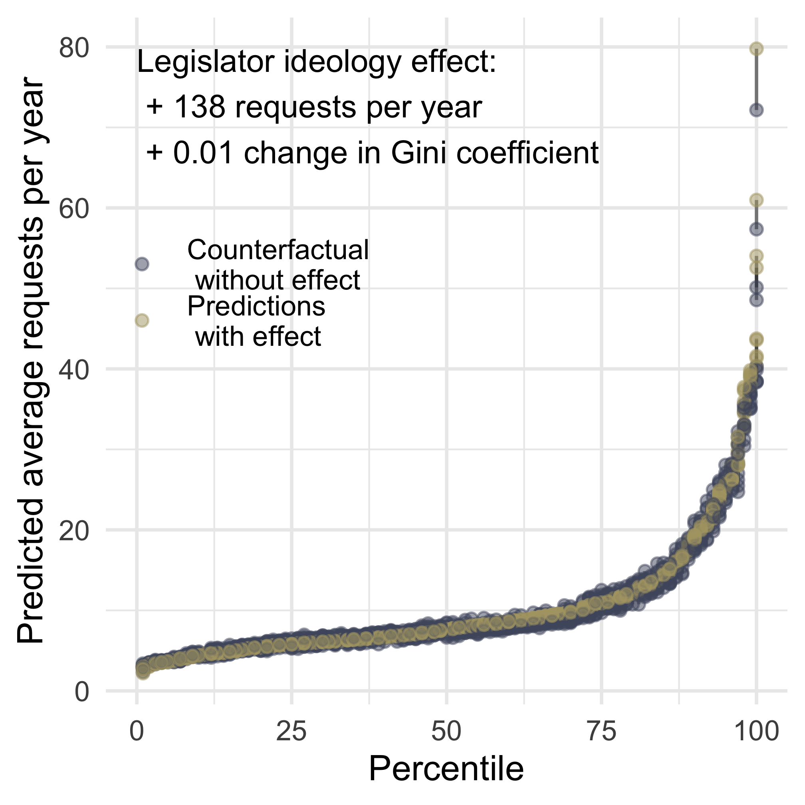
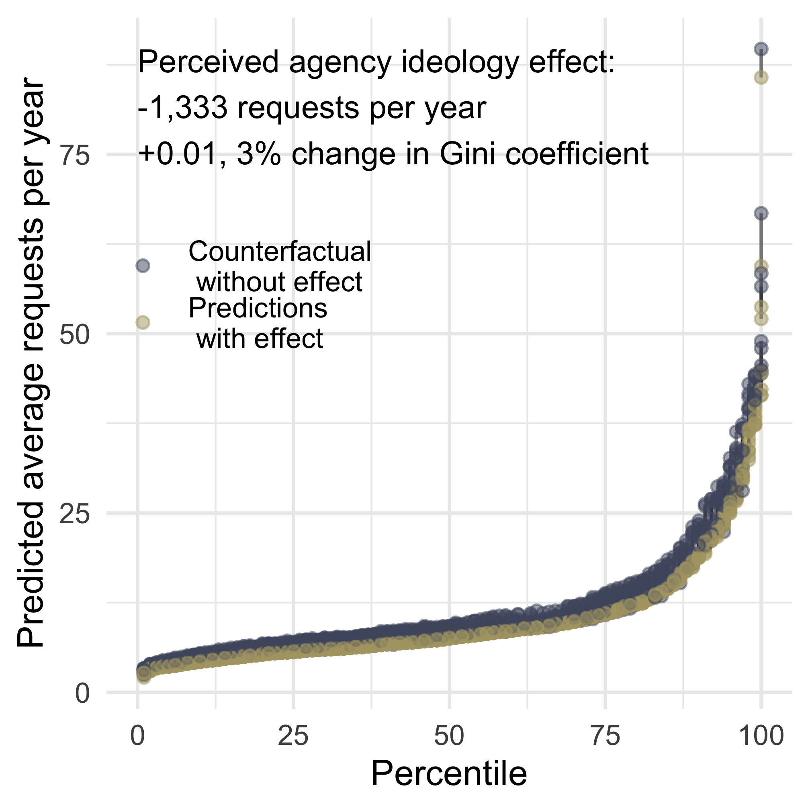

| (1) | (2) | (3) | (4) | (5) | (6) | |
|---|---|---|---|---|---|---|
| † p < 0.1, * p < 0.05, ** p < 0.01 | ||||||
| Robust standard errors in parentheses, clustered by legislator. | ||||||
| This table shows estimates of the effect of legislator capacity (chair and ranking member positions and years in office) and institutional positions that may affect strategic behavior (oversight committee membership, majority party status, co-partisan president) on levels of interbranch representation. All coefficients represent the average additional requests per year per agency; per legislator, per year effects are simply these coefficients times the number of agencies in the data. | ||||||
| Dependent variable | Count | Count | Count | Count | Count | Count |
| State population (millions) | 0.040** | |||||
| (0.009) | ||||||
| Committee chair | 0.607** | 0.190** | 0.348** | 0.322** | 0.121 | 0.135** |
| (0.075) | (0.045) | (0.076) | (0.068) | (0.078) | (0.046) | |
| Ranking member | 0.619** | 0.118** | 0.185* | 0.181** | 0.280** | 0.139** |
| (0.081) | (0.037) | (0.075) | (0.055) | (0.085) | (0.047) | |
| Prestige committee | 0.294** | 0.011 | -0.020 | -0.037 | 0.041 | 0.122† |
| (0.046) | (0.032) | (0.037) | (0.029) | (0.075) | (0.065) | |
| Oversight committee | 0.356** | 0.122** | 0.289** | 0.066* | 0.154** | 0.041 |
| (0.029) | (0.032) | (0.025) | (0.033) | (0.046) | (0.040) | |
| Three+ years in office | 0.192** | 0.185** | 0.175** | 0.152** | 0.523** | 0.336** |
| (0.037) | (0.025) | (0.032) | (0.026) | (0.095) | (0.064) | |
| Majority | 0.049 | -0.036* | -0.001 | -0.046* | 0.101† | 0.010 |
| (0.038) | (0.017) | (0.026) | (0.018) | (0.058) | (0.035) | |
| President's party | 0.107** | 0.031* | 0.009 | 0.027† | 0.105* | 0.041 |
| (0.035) | (0.014) | (0.025) | (0.015) | (0.043) | (0.025) | |
| Observations | 430,821 | 245,332 | 340,626 | 184,859 | 77,987 | 56,374 |
| Year x agency fixed effects | X | X | X | X | X | X |
| Legislator x agency fixed effects | X | X | X | |||
| All legislators | X | X | ||||
| Only House | X | X | ||||
| Only Senate | X | X | ||||
8 General Policy Work
ABSTRACT: Stark differences in the amount of policy work legislators do is driven by the capacity gained through institutional positions. Like with constituency service, experience matters, independent of institutional positions of power, but institutional power drives differences in policy work to a degree much greater than any kind of constituency service. Unsurprisingly, being a committee chair, ranking member, or oversight committee member is an especially strong predictor of contacting an agency about policy. Like with constituency service, legislators are more likely to work with agencies on policy when they are ideologically aligned, reflecting how policy work is not just traditional “oversight” investigations into wrongdoing, but also includes proactive information seeking during the drafting of legislation and, most commonly, follow-up to make sure legislative directions result in agency rules as envisioned by the legislators. Unlike constituency service, where legislators are more likely to contact co-partisan presidents, the partisanship of the president has a less significant effect on policy work.
8.1 Results
The simple descriptive result in figure Figure 9.1 immediately puts to rest the naive theory of proportional representation. The Gini coefficient of inequality for the House, where all members represent a similar number of constituents, is similar to that of the Senate. The rest of this section investigates explanations for this inequality. However, it is important to note that not all models explain the levels of inequality, much less the variation seen in the data. Gini coefficients for inequality in interbranch representation have increased from .37 in the Senate and .40 in the House in 2007 (a range that maps to Gini coefficients for income inequality in countries like Kenya and Philippines) to .47 in the Senate and .54 in the house in 2020 (a range that maps to Gini coefficients for income inequality in the top 10 most unequal countries, including Honduras at .47 and Zimbabwe at .50), with an average of .49 for both chambers. The regression models below never predict Gini coefficients for interbranch representation greater than .34 (comparable to income inequality in Italy and Latvia), the lowest level observed in either chamber in any year in our data.


8.1.1 Demand and Capacity
Models 1, 3, and 5 (columns 1, 3, and 5 of Table 9.1) show differences across legislators. Estimating the effect of constituent demand is difficult, primarily because demand is directly affected by both the capacity and strategic behavior of legislator offices when they advertise constituency services. Second, the population in the house districts is the same, so there is no variation to exploit in the number of constituents per representative. However, budgets for staff are determined by the population of the state. Under these conditions, failing to find a significant relationship between state population and senators would be surprising evidence against both constituent demand and congressional capacity as drivers of interbranch representation.
Unsurprisingly, the first row of Table 9.1 shows a relationship between state population and the amount of interbranch representation that Senators have. Because state populations do not change relative to each other, we are only able to estimate this for the cross-sectional model (column 5 in Table 9.1). Using the coefficients and fixed effects from this model, Figure 9.2 shows the predicted average levels of interbranch representation per year per senator compared to a counterfactual where we re-estimate levels for a counterfactual scenario where all states had the population of Wyoming (and thus all Senators had equal staff budgets equal to those of Wyoming).

Capacity
Legislators with more institutional capacity make more requests. Model 1 shows that committee chairs, ranking members, members of oversight committees, and members of prestige committees all provide more interbranch representation than other legislators. Except for prestige committee membership, these hold significance just within the House (model 3). Among senators (Model 5), only ranking members and oversight committee members are significantly more representation. Because we estimate the effects of becoming a committee chair and being a member of a prestige committee in the same model, these effects are additive: prestige committee chairs may make more requests than non-prestige committee chairs, who make more requests than non-chairs.
Figure 9.3 shows how differing levels of capacity among legislators affect the total predicted level of inequality in interbranch representation estimated in model 1. First, we predict the number of requests per legislator per year per agency for all legislator-year-agency observations in the data using all model parameters, including legislator fixed effects. Then we estimate counterfactual levels without one or more effects. Figure 9.3 (a) shows the counterfactual where no legislators have the capacity that comes with a committee chair position. Differences in this counterfactual are concentrated on legislators in the top percentiles because committee chairs tend to do the most interbranch representation. Figure 9.3 (b) shows the counterfactual where no legislators have the capacity that comes with a ranking minority position. Figure 9.3 (c) shows the counterfactual where no legislators have the capacity that comes with more than two years in office. Figure 9.3 (d) shows the sum of these capacity effects, a counterfactual where no legislators have the capacity that comes with a chair, ranking minority position, or more than two years of experience. This represents a world where all members turn over every congress and committees have no staff.
Overall, elements of legislator capacity modeled in Table 9.1 explain a significant level of inequality in interbranch representation. These differences are both statistically significant and substantively large relative to other causes of variation that are captured in the legislator fixed effects, explaining over 10% of total inequality predicted by the model.




However, these cross-sectional differences may be the result of other legislator characteristics. If party leaders assign legislators who are better at their jobs to more prestigious committee positions, then the estimates from model 1 confound legislators’ overall ability with capacity that is the result of staff resources and experience. To address potential confounding, model 2 in Table 9.1 shows the difference-in-differences specification. Our three capacity-related predictors are all significant predictors of within-legislator variation as well. Gaining a chair position, a ranking member position, or more than two years of experience in office all cause legislators to engage in more interbranch representation.
Staff Allocation
Legislators who allocate more staff to constituency service make more requests; those who allocate more staff to communications make fewer. Table 9.2 model 1 shows that legislators who allocate more of their budget to constituency service staff provide more interbranch representation than other legislators. These hold significance just within the House (model 3). Because we estimate the effects of becoming a committee chair and staff allocation in the same model, these effects are additive: committee chairs who allocate more staff to constituency service and less to communications make more requests than other committee chairs, who make more requests than non-chairs. In terms of magnitude, a committee chair position is similar to spending 1 million more per year on constituency service staff.
| (1) | (2) | (3) | (4) | |
|---|---|---|---|---|
| † p < 0.1, * p < 0.05, ** p < 0.01 | ||||
| Robust standard errors in parentheses, clustered by legislator. | ||||
| This table shows estimates of the effect of legislator capacity (chair and ranking member positions and years in office) and institutional positions that may affect strategic behavior (oversight committee membership, majority party status, co-partisan president) on levels of interbranch representation. All coefficients represent the average additional requests per year per agency; per legislator, per year effects are simply these coefficients times the number of agencies in the data. | ||||
| Dependent Variable | Count | Count | Count | Count |
| Committee chair | 0.339** | 0.238** | 0.337** | 0.238** |
| (0.086) | (0.077) | (0.085) | (0.076) | |
| Ranking member | 0.178* | 0.126† | 0.178* | 0.126† |
| (0.082) | (0.072) | (0.082) | (0.072) | |
| Prestige committee | -0.005 | 0.004 | -0.005 | 0.004 |
| (0.043) | (0.035) | (0.043) | (0.035) | |
| Oversight committee | 0.274** | 0.015 | 0.273** | 0.015 |
| (0.027) | (0.041) | (0.028) | (0.041) | |
| Three+ years in office | 0.169** | 0.102** | 0.157** | 0.102** |
| (0.040) | (0.037) | (0.040) | (0.037) | |
| Majority | -0.039 | -0.078** | -0.042 | -0.078** |
| (0.032) | (0.021) | (0.033) | (0.021) | |
| President's party | 0.001 | -0.005 | -0.011 | -0.005 |
| (0.039) | (0.021) | (0.040) | (0.021) | |
| Leg. Spending | 0.059 | 0.058 | 0.044 | 0.058 |
| (0.187) | (0.128) | (0.189) | (0.128) | |
| Pol. Spending | -0.129 | 0.036 | -0.144 | 0.035 |
| (0.273) | (0.138) | (0.277) | (0.138) | |
| Comm. Spending | -1.274* | 0.097 | -1.281* | 0.097 |
| (0.570) | (0.323) | (0.575) | (0.323) | |
| Office spending | -0.327 | -0.178 | -0.326 | -0.179 |
| (0.372) | (0.214) | (0.379) | (0.213) | |
| Const. Spending | 0.379* | 0.310* | 0.369* | 0.310* |
| (0.174) | (0.123) | (0.176) | (0.123) | |
| Observations | 213,674 | 109,011 | 207,450 | 106,873 |
| Year x agency fixed effects | X | X | X | X |
| Legislator x agency fixed effects | X | X | ||
| All Legislators | X | X | ||
| Served At Least 2nd Term | X | X | ||
Similar to Figure 9.3, Figure 9.4 shows how the differing allocation of staff spending among members of the House affects the total predicted level of inequality in interbranch representation estimated in model 1. Figure 9.4 (a) shows the counterfactual where representatives allocate none of their budget to constituency service. Differences in this counterfactual are spread across the distribution because, despite significant variation, most legislators allocate a large share of their budget to constituency service staff. Figure 9.4 (b) shows the counterfactual where all representatives allocate no resources to communications.
Overall, elements of legislator staff allocation modeled in Table 9.2 explain a significant amount of the volume of requests to federal agencies, but do not explain inequality in interbranch representation.


However, these cross-sectional differences may be the result of other legislator characteristics. If members who allocate more staff to constituency service or communications also differ in unobserved ways, then the estimates from model 1 confound legislators’ unobserved differences with capacity that is the result of staff allocation. To address potential confounding, model 2 in Table 9.1 shows the difference-in-differences specification. Constituency service staffing is a significant predictor of within-legislator variation as well, but communications staffing is not. A member allocating more of their staff budget to constituency service causes their office to provide more interbranch representation, but we lack causal evidence for communications staffing.
Staff quality
To test whether retaining staff from the prior representative impacts interbranch representation, Table 9.3 shows district-level models (estimating counts per district per year per agency with agency-year fixed effects). Consistent with the positive effect of legislator experience in the legislator-level models above, all specifications in Table 9.3 show a strong negative effect of a district electing a new legislator. Contrary to the hypothesis that legislators replacing a member of the same party would increase capacity, we see that districts where a new representative was elected from the same party see less interbranch representation (model 1). However, this difference across districts could be the result of other district-level differences, and indeed, there appears to be no relationship in the within-district design (model 2).1 It is possible that other measures of staff quality would yield different results.
| (1) | (2) | (3) | (4) | |
|---|---|---|---|---|
| † p < 0.1, * p < 0.05, ** p < 0.01 | ||||
| Robust standard errors in parentheses, clustered by district | ||||
| This table shows estimates of the effect of electing a new member of the same or different party on levels of interbranch representation. All coefficients represent the average additional requests per year per agency; per district, per year effects are simply these coefficients times the number of agencies in the data. | ||||
| Dependent variable | Count | Count | Count | Count |
| New member | -0.432** | -0.158** | -0.489** | -0.162** |
| (0.066) | (0.018) | (0.085) | (0.042) | |
| New member x same party | 0.184 | 0.017 | ||
| (0.179) | (0.054) | |||
| Same party | -0.417** | -0.049 | ||
| (0.127) | (0.052) | |||
| Observations | 442,597 | 442,597 | 181,486 | 181,458 |
| Year x agency fixed effects | X | X | X | X |
| District fixed effects | X | X | ||
8.1.2 Strategic Behavior
To assess strategic behavior, we return to legislator-level models, first returning to the motivation-related variables Table 9.1 and then including variables for electoral competition in Table 9.4 and for voting behavior and perceived ideology in Table 9.5.
8.1.3 Strategic responses to partisan institutions
One well-established driver of interbranch representation is partisan institutional control. When members of the minority party are blocked from agenda control or cross-pressured, they use interbranch representation to serve their district in ways other than legislating (Ritchie 2018, 2023). To estimate how large a role minority party status plays in overall levels and inequality in interbranch representation, Figure 9.5 (a) compares predictions for observed values to a counterfactual where all members behave as if they are in the minority (based on cross-sectional differences in Table 9.5, model 1). Because this majority/minority party status is only statistically significant in difference-in-difference specifications, subfigure (b) shows the same counterfactual estimated with predictions from the Table 9.1 model 2. Most of the variance is captured in legislator fixed effects; the aggregate differences are necessarily smaller for difference-in-difference predictions.
Figure 9.5 (c) compares predictions for observed values to a counterfactual where all members behave as if the president is of the opposite party (based on cross-sectional differences in Table 9.5, model 1). Because this majority/minority party status is only statistically significant in difference-in-difference specifications, Figure 9.5 (d) shows the same counterfactual estimated with predictions from Table 9.1 model 2. Legislators with co-partisan presidents do more interbranch representation. When a legislator gains a co-partisan president, that same legislator can also be expected to do more interbranch representation. However, because partisanship is not concentrated on one end of the distribution, these partisan has little effect on the level of inequality.


Electoral security
Table 9.4 shows inconsistent support for the theory that interbranch representation is reelection motivated (King 1991). Cross-sectionally, we find differences across legislators whose prior election was competitive or not (model 1), including when we subset to legislators who were reelected (model 3). However, the within-member design (models 2 and 4) does not show a difference in behavior when a member had recently faced a competitive election and when they had not.
| (1) | (2) | (3) | (4) | |
|---|---|---|---|---|
| † p < 0.1, * p < 0.05, ** p < 0.01 | ||||
| Robust standard errors in parentheses, clustered by legislator. | ||||
| This table shows estimates of the effect of electoral competition on levels of interbranch representation. All coefficients represent the average additional requests per year per agency; per legislator, per year effects are simply these coefficients times the number of agencies in the data. | ||||
| Dependent variable | Count | Count | Count | Count |
| Competitive general | 0.146** | -0.019 | 0.145** | -0.011 |
| (0.039) | (0.028) | (0.041) | (0.030) | |
| Competitive primary | -0.039 | 0.120** | -0.045 | 0.118** |
| (0.046) | (0.038) | (0.049) | (0.038) | |
| Committee chair | 0.355** | 0.332** | 0.355** | 0.331** |
| (0.078) | (0.068) | (0.078) | (0.068) | |
| Ranking member | 0.175* | 0.179** | 0.172* | 0.179** |
| (0.073) | (0.056) | (0.072) | (0.056) | |
| Prestige committee | -0.009 | -0.035 | -0.011 | -0.034 |
| (0.037) | (0.031) | (0.038) | (0.031) | |
| Oversight committee | 0.283** | 0.049 | 0.284** | 0.050 |
| (0.026) | (0.035) | (0.026) | (0.035) | |
| Three+ years in office | 0.192** | 0.181** | 0.158** | 0.177** |
| (0.036) | (0.031) | (0.038) | (0.031) | |
| Majority | -0.013 | -0.058** | -0.018 | -0.051** |
| (0.027) | (0.019) | (0.027) | (0.019) | |
| President's party | 0.031 | 0.025 | 0.023 | |
| (0.025) | (0.026) | (0.016) | ||
| Observations | 322,987 | 175,725 | 313,209 | 172,860 |
| Year x agency fixed effects | X | X | X | X |
| Legislator x agency fixed effects | X | X | ||
| Served At Least 2nd Term | X | X | ||
Figure 9.6 shows the predicted levels of interbranch representation from Table 9.4 compared to a counterfactual where no member’s prior general election had been competitive. Because differences in general election competition are only statistically different across members (not within), Figure 9.6 (a) shows cross-sectional differences (Table 9.4, model 1). Because differences in primary election competition are only statistically different within members, Figure 9.6 (b) shows difference-in-differences (Table 9.4, model 2). The estimated difference between competitive and non-competitive districts is spread across the distribution of representatives who provide higher and lower levels of interbranch representation, and thus, has little impact on the inequality across districts.


Ideology and Oversight
| (1) | (2) | |
|---|---|---|
| † p < 0.1, * p < 0.05, ** p < 0.01 | ||
| Robust standard errors in parentheses, clustered by legislator. | ||
| This table shows estimates of the effect of ideological distance on levels of interbranch representation. All coefficients represent the average additional requests per year per agency; per legislator, per year effects are simply these coefficients times the number of agencies in the data. | ||
| Dependent variable | Count | Count |
| Committee chair | 0.571** | 0.605** |
| (0.076) | (0.076) | |
| Ranking member | 0.575** | 0.599** |
| (0.074) | (0.075) | |
| Prestige committee | 0.256** | 0.266** |
| (0.046) | (0.046) | |
| Oversight committee | 0.366** | 0.368** |
| (0.029) | (0.031) | |
| Abs(nominate) | -0.855** | -0.833** |
| (0.183) | (0.187) | |
| Abs(nominate) x president's party | -0.170 | -0.138 |
| (0.216) | (0.228) | |
| Ideological distance | -0.095** | -0.096** |
| (0.030) | (0.030) | |
| Ideological distance x president's party | -0.031 | -0.026 |
| (0.024) | (0.025) | |
| Three+ years in office | 0.186** | |
| (0.038) | ||
| Majority | 0.049 | 0.036 |
| (0.038) | (0.039) | |
| President's party | 0.151 | 0.143 |
| (0.094) | (0.099) | |
| Observations | 229,036 | 219,533 |
| Year x agency fixed effects | X | X |
While potentially evidence of strategic behavior, legislators engaging more with agencies that they oversee or those perceived as ideologically similar or distant is about which agencies representatives target, rather than how much they do.2 However, some agencies receive much more attention than others, and thus, some oversight committees are much more active than others. This uneven distribution of attention leads both oversight committee membership and perceived ideological distance to alter the overall level of inequality, but in different directions. Including the additional requests that members of oversight committees make significantly increases the Gini coefficient (compared to a counterfactual where legislators behaved as if they did not have an oversight committee position). Compared to a counterfactual where all members had NOMINATE scores of 0 (subfigure a), predicted levels of interbranch representation are lower and slightly less unequal. Compared to a counterfactual where all agencies had ideology scores of 0 (subfigure b), predicted levels of interbranch representation are higher and slightly more unequal.


Following the overall pattern, but perhaps more surprising, LES scores are weakly correlated with policy work that legislators do in terms of contacting federal agencies for information and following up on policy implementation (e.g., through rulemaking).
Two important notes: (1) We only observe whether a legislator is replaced by a member of the same party or a different party after a seat turns over within a 10-year redistricting window. (2) Regarding the difference in difference design, it is worth noting that the number of competitive districts that saw turnover both to a member of the same party and to a member of the other party within a 10-year redistricting period, so much of the inference in the difference-in-difference comes from the Senate.↩︎
To measure agency ideology, we rely on Richardson et al. (2018)’s measure of elite perceptions of agency ideology.↩︎